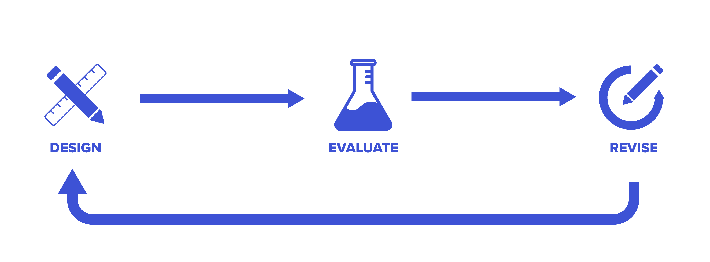
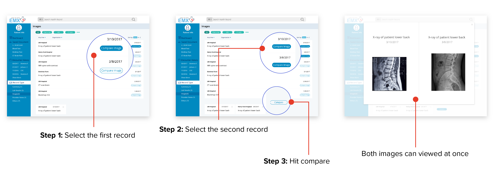

Overview
EMX Systems is a healthcare IT company developing a web-based app to make patient record exchange easier for healthcare providers. Their service combines patient records from multiple electronic medical record (EMR) systems and gives providers instant access through an online portal. With EMX’s software, providers would no longer need to wait for records to arrive by mail or fax, leading to more efficient patient care. I was part of a major project to completely redesign EMX System’s web portal with new features to improve the provider experience.
UX Researcher
Background and Context
Patients often see multiple providers during treatment, such as when they need a specialist, move, or travel. When they do, the new provider needs to review the previous providers’ records. Since EMR systems from different vendors are not cross-compatible, the patient records need to be physically obtained -- through fax, snail mail, or bought in by the patient.

EMX Systems offers an alternative: a service that pulls patient records from multiple EMRs so they can be shared, combined, and viewed from a single location -- the EMX web portal.

Uncovering the Facts on Medical Records
Without any knowledge about healthcare delivery, our team’s first steps in this project were learning electronic record systems, patient record exchange, and patient encounters.
User Interviews
We interviewed nine healthcare providers to learn about their experiences with EMRs and record exchange. Our findings showed that providers had similar concerns and experiences with EMR systems and patient record exchange.
-
Waiting for Mail
Waiting for records to arrive often delays patient care. -
Busy Work for staff
Records from outside have to be scanned and manually entered into the system. -
Hard to find what you want
Outside records are often entered as images, making in-document search impossible. -
Overly Complex Software
Features unrelated to patient care clutter EMRs, making them harder to use. -
Difficulty Searching
Many EMRs have a search feature that requires too much precision to use correctly. -
Too much time on the computer
Providers felt that it took too long to find a specific record in their current record system.
Personas
Based on our interviews, our team created three personas representing segments of our audience.


Survey
We surveyed providers to get their opinions are current record exchange methods and what types of records exchanged most often. 22 providers responded to this survey.
Medical imaging & lab reports were the most frequent common exchanged record types.
60% of respondents said that current methods for getting medical records were unreliable. 60% of respondents were dissatisfied.

75% of respondents wished they could get outside records on the spot (while the patient is there).
User Journey
Our conversations with providers painted a clear image of how the record exchange process impacted care:
- Providers have long waits to get records.
- The systems to manage the data were confusing to use.
- The whole process created additional work for the practice.
Going into the redesign phase, a big question I had on my mind was: What features could we create/improve for EMX portal to improve this user journey?
Introducing the new EMX System Experience
In contrast to the unintuitive record systems providers usually use, the new EMX portal offers a streamlined experience that gives providers more time with their patients. Our redesign removes the bloat and focuses on features that help providers find what they are looking for, as quickly possible.
The Patient-centered Dashboard
The patient record dashboard is the center of the new interface. Records are organized by type with the most recent first, putting most relevant records one click away.

A More Efficient Search
Filters provide time-saving shortcuts when providers need to make record searches.
A Fit for Every Provider
The new interface lets providers change the types of records that appear on their dashboard so they can prioritize what’s most relevant to their practice.
Save and Compare Documents
When a provider needs to view multiple records, our record save and image comparison features help them work more efficiently.
How the Experience was Made
To create a better provider experience for EMX’s web portal, I considered three main questions in my design strategy:
- What are the most important things to a provider using this system?
- How can the interface deal with differences in needs by different types of providers?
- What contexts surrounding a record need to be considered in feature design?

During the design process, we followed an iterative design cycle where we worked on a prototype, user-tested features, and iterated based on the feedback received.
Putting patients first: Designing the dashboard
When I learned about providers’ dislike for their current record systems, I thought about how I could make EMX Systems the opposite — a system that viders liked using. To tackle this question, I focused on what providers cared about most: their patients.
To focus on patients, I designed a dashboard that displayed a list of patient records as the first screen after a provider selects a patient. This list was ordered by most recent first. Since more recent records are more often reviewed, this ordering increases the chance that the provider finds the record they need right away.
I initially showed all record types in a single list, but changed my design after the rest of the team reminded me that different kinds of records were more relevant to different types of providers. To address this problem, I split up different record types into different dashboard sections in my next design iteration.
Fitting EMX for All Provider Types
Our team took a design risk in the redesign allowing providers to customize the record types that appeared on their dashboard. This feature would add complexity, which providers viewed as a distraction from patient care.
After debating the pros and cons, we decided on adding record type personalization with an onboarding process. The time saved by having the most relevant record types upfront would be worth the extra complexity. We included the customization in the onboarding process so that the app could guide providers through the setup and not require them to worry about it later.

Presenting Medical Imaging Records
Providers we surveyed cited medical images as one of their most requested record types. As such, I was particularly interested in figuring out the best way to present them.
My initial strategy for imaging was to present them like any other type of record — click and view the document.

But after testing my design, I discovered a flaw in my approach. Medical images are not only used individually. Providers also compared images of the same patient to check their progress!
In response to this discovery, I added a compare feature to imaging records that lets users select multiple images and view them side by side.
Cutting down on typing: Search filters
From our research, we knew that our users preferred searching to find specific records, but did not like how precise they needed to be for most record systems. One interviewee noted about his EMR’s search, “You cannot find anything if you type in spine clinic instead of clinic spine.”
Search filters are our team’s solution for easier searching. Instead of memorizing and typing exact terms, EMX portal users can use broader keywords and drill down with filters. Every record type that appears the dashboard includes filter options, letting our users find records on the landing page, skipping the typing altogether.
A Sum of many parts: Save for later
During a user testing session, we saw users flipping between multiple record categories to learn about the patient. When we asked what they were doing, the users told us they needed to review several types of records to get a good impression of the patient. We had not considered this behavior up until this point. Our workflow required a lot of repetition to get through multiple categories.
To reduce the repetition, we introduced a feature called Save for Later. This feature allows users to bookmark records and review them from a single page later. Bookmarking can be done with one click next to the document and easily accessed through the “saved for later” shortcut on the bottom right of the dashboard.
Considering the Context
Cutting Back for Limitations
Our initial design for lab result records showed numbers from the lab right in the dashboard to save a step. But after review with EMX’s developer, we got feedback that it was unrealistic. Lab results are often scanned into record systems as images and contain too many different values -- our original idea was unfeasible. To make our design more feasible, we changed the lab report display to show a link to the report instead.
Patient Demographics Location
In our early prototypes, patient demographics were put on the main dashboard because we believed that this was important information for a provider. However, after user testing, this assumption did not hold up. While providers did want to see the patient’s demographics, they only reviewed it extensively the first time they met the patient. Afterward, it was only referred to as needed. With that in mind, I moved patient demographics to a different part of the page. This choice decluttered the interface and gave more room for useful patient information.
A Blueprint for Presentation
While working on this project, I maintained a set of shared UI design guidelines for the UI and updated them as the prototype evolved. Our UI design focused on readability and uncluttered components to compliment our flow UX. We knew that providers disliked when clutter distracting them from patient care, so focused on creating a clean, unified interface.
While prototyping, our team referred to the design library to keep UI elements consistent when more than one designer worked on a feature. We also turned the library into a set of guidelines for our client's developers to help them build our design.


Conclusions
Client Feedback
At the end of the project, our team presented the new EMX Systems portal to our client. Our final deliverables included a hi-fi interactive prototype, a set of UI design guidelines, and a workflow map. Our client was happy with the outcome and had the following to say:
"I've finally had a chance to review your work thoroughly, and I'm thrilled. You took a very difficult problem, one that we couldn't define very well for you, and came up with an elegant, simple UI design: exactly what we needed. It was a pleasure working with all of you, and you have our enthusiastic thanks for all your hard work." Alan
Co-founder, EMX System
What I learned
-
Validate your assumptions about the product and the users
Designers often make assumptions about the product and the users. Some of those assumptions may be wrong, so it is vital to get user feedback to check that the features align with the user's goals. In this project, user testing helped us catch mistakes and inspired the creation of features like bookmarking with Save for Later.
-
Get the Client Involved
Getting our client's healthcare expertise was vital to understanding the healthcare context of this project. Our client, a doctor, helped us answer any questions we had about the healthcare process. Our team also shared prototypes for feedback to ensure that we based our designs on a correct understanding of the record exchange.
-
Be a Proactive Teammate
As our prototype grew, so did the number of inconsistent UI elements. To keep our team working efficiently, I turned our UI components into a shared Sketch library. This library helped us work faster — during our meetings, we spent less time syncing mockups and had more to discuss UX improvements.
Other Projects

Moment
UX Design | UX Research

MCommunity
UX Research